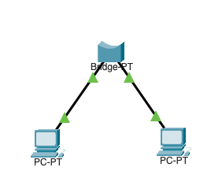
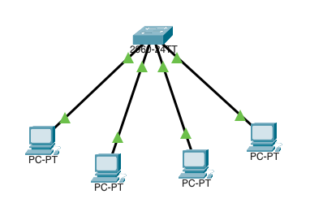
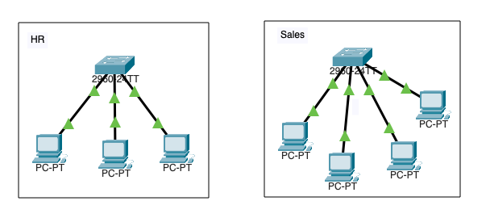
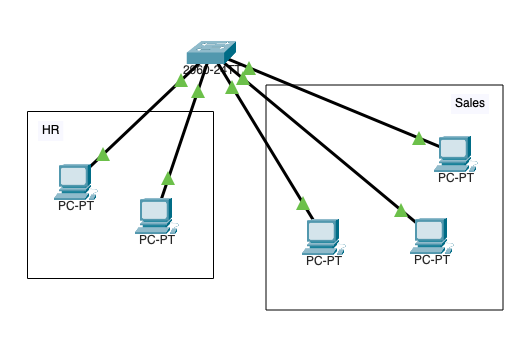
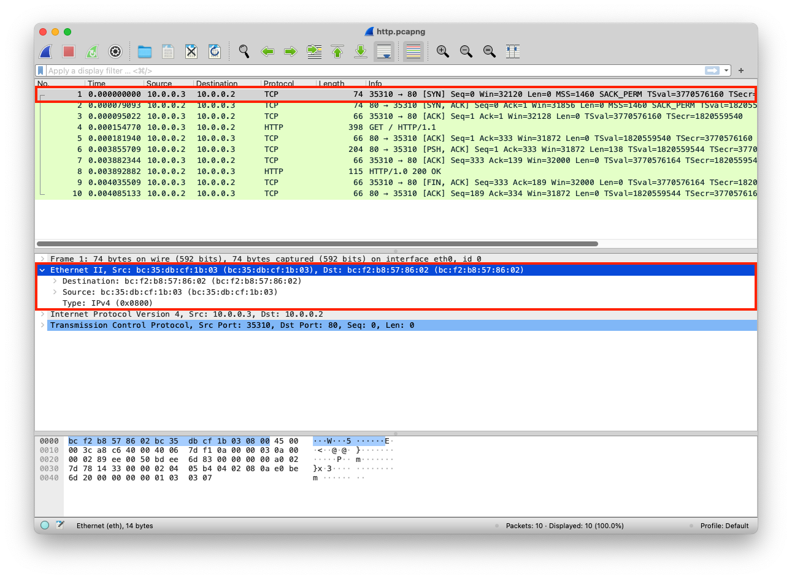

A layer that enables data transmission between two nodes on the same network.
A set of rules governing the communication and exchange of data between two nodes on the same network
A device that has 2 ports and forwards data packets between devices (Uses MAC addresses and stores that in a lookup table)

A device that has more than 2 ports and forwards data packets between devices (Uses MAC addresses and stores that in a lookup table)

Physically divide a large network into smaller networks

Logically divide a large network into smaller networks (This type of segmentation is software-based)

A 12-digit hexadecimal number assigned to the network interface card (A physical address used to identify devices). You can find the manufacturer of a device by its MAC Address
The python web server uses the default network interface that has a specific MAC address
from http.server import SimpleHTTPRequestHandler
from socketserver import TCPServer
from io import BytesIO
from gzip import GzipFile
from datetime import datetime
from contextlib import suppress
with suppress(Exception):
from netifaces import gateways, ifaddresses, AF_INET, AF_LINK
print("The default network interface is: ",gateways()['default'][AF_INET][1])
print("The default network interface mac address is: ",ifaddresses(gateways()['default'][AF_INET][1])[AF_LINK])
class Server(SimpleHTTPRequestHandler):
def do_GET(self):
compressed = False
content = b'<HTML><h1>Hello World!</h1></HTML>'
if len(content) > 0:
if 'accept-encoding' in self.headers:
if 'gzip' in self.headers['accept-encoding']:
bytes_ = BytesIO()
with GzipFile(fileobj=bytes_, mode='w', compresslevel=5) as f:
f.write(content)
f.close()
content = bytes_.getvalue()
compressed = True
self.send_response(200)
if compressed:
self.send_header('content-encoding', 'gzip')
self.send_header('content-length', len(content))
self.end_headers()
self.wfile.write(content)
def log_message(self, format, *args):
print("[{}] - {}:{} - {} {}".format(datetime.now().strftime("%m/%d/%Y %H:%M:%S"), self.client_address[0],self.client_address[1],args[0],args[1]))
TCPServer(('0.0.0.0', 80), Server).serve_forever()
The MACs are added to each packet
| Layer | Protocol | PDU | Info | Ports | IPs | MACs |
| Transport Layer | TCP | Segments | 3 Way handshake Process (SYN) | Src Port: 35310 Dst Port: 80 |
||
| Network Layer | IP | Packets | 3 Way handshake Process (SYN) | Src Port: 35310 Dst Port: 80 |
Src IP: 10.0.0.3 Dst IP: 10.0.0.2 |
|
| Data Link Layer | Ethernet | Frames | 3 Way handshake Process (SYN) | Src Port: 35310 Dst Port: 80 |
Src IP: 10.0.0.3 Dst IP: 10.0.0.2 |
Src MAC: bc:35:db:cf:1b:03 |
| Physical Layer | Coax | Bits | 01001000 01010100 01010100 | 01001000 01010100 | 01001000 01010100 | 01001000 01010100 |
